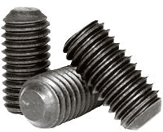

DIN 913 Винт установочный с внутренним шестигранником и плоским концом
Стандарт
DIN 913
ISO
ISO 4026
Цена от
0,22 ₽
Размерный ряд
: От М1,4 до М24.
Винты » Винты DIN » DIN 913 (ISO 4026) винты установочные с внутренним шестигранником и плоским концом
Варианты и размеры (18)
| Наименование | Размер | Длина, мм | Материал | Покрытие | Цена |
|---|---|---|---|---|---|
| DIN 913 Винт установочный с внутренним шестигранником и плоским концом L=10мм | 10 | 0,18 ₽ | |||
| DIN 913 Винт установочный с внутренним шестигранником и плоским концом L=12мм | 12 | 0,19 ₽ | |||
| DIN 913 Винт установочный с внутренним шестигранником и плоским концом L=16мм | 16 | 0,20 ₽ | |||
| DIN 913 Винт установочный с внутренним шестигранником и плоским концом L=20мм | 20 | 0,21 ₽ | |||
| DIN 913 Винт установочный с внутренним шестигранником и плоским концом L=25мм | 25 | 0,22 ₽ | |||
| DIN 913 Винт установочный с внутренним шестигранником и плоским концом L=2мм | 2 | 0,16 ₽ | |||
| DIN 913 Винт установочный с внутренним шестигранником и плоским концом L=30мм | 30 | 0,24 ₽ | |||
| DIN 913 Винт установочный с внутренним шестигранником и плоским концом L=35мм | 35 | 0,25 ₽ | |||
| DIN 913 Винт установочный с внутренним шестигранником и плоским концом L=3мм | 3 | 0,16 ₽ | |||
| DIN 913 Винт установочный с внутренним шестигранником и плоским концом L=40мм | 40 | 0,26 ₽ | |||
| DIN 913 Винт установочный с внутренним шестигранником и плоским концом L=45мм | 45 | 0,28 ₽ | |||
| DIN 913 Винт установочный с внутренним шестигранником и плоским концом L=4мм | 4 | 0,17 ₽ | |||
| DIN 913 Винт установочный с внутренним шестигранником и плоским концом L=50мм | 50 | 0,29 ₽ | |||
| DIN 913 Винт установочный с внутренним шестигранником и плоским концом L=55мм | 55 | 0,31 ₽ | |||
| DIN 913 Винт установочный с внутренним шестигранником и плоским концом L=5мм | 5 | 0,17 ₽ | |||
| DIN 913 Винт установочный с внутренним шестигранником и плоским концом L=60мм | 60 | 0,32 ₽ | |||
| DIN 913 Винт установочный с внутренним шестигранником и плоским концом L=6мм | 6 | 0,17 ₽ | |||
| DIN 913 Винт установочный с внутренним шестигранником и плоским концом L=8мм | 8 | 0,18 ₽ |